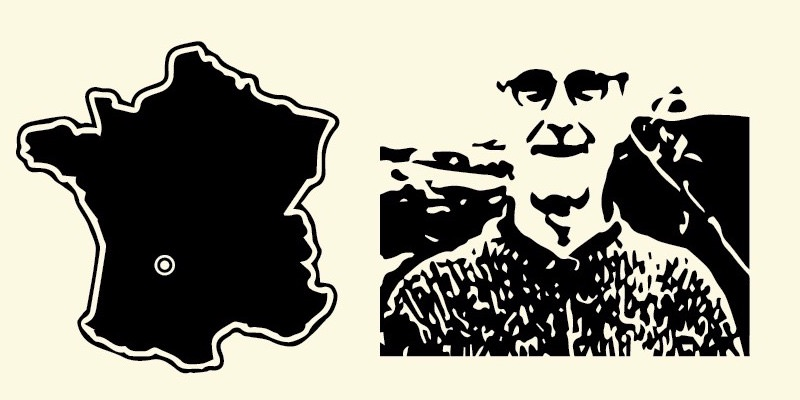

Organic restaurants. Vegan restaurants. Minibars in hotels. Breakfast restaurants
Our client are increasingly concerned about the origins of the products. The bottles display growers name and pictures, as well as a map where the fruits are grown. Our customers love itEdward — Vegan Restaurant Owner
Magna Terrae effectively communicate two of our core values: quality & sustainability. 25cl bottles are in every room's minibars! The 1L fruit juices at our breakfast buffet every morningJean — Boutique Hotel Pruchasing Manager
Unlike cold press juices, product shelf life goes over a year. Nor hassle for our stock management, no stock write off. This is great! Nor to mention that products taste and look great.Jane — Gastropub Owner
Our small bottles
Ideal for
Your first liter is on us!
Show the values you stand for. Stop worying about shelf life. Get amazing products!
Our big bottles
Ideal for
Hotel breakfast buffets. Medium and large restaurants. Breakfast restaurants
Your first liter is on us!
Show the values you stand for. Stop worying about shelf life. Get amazing products!
Our growers

David from Montaulieu, France.
David is based in Montaulieu, France. He solely does an Organic Apricot Nectar but he surely knows how.

Pat from Lydbrook, UK
Amongst all of his products, we have selected the Organic Apple & Raspberry Juice, Organic Medium Apple Juice and the Organic Pear & Apple Juice.

Emmanuel from Vaudevant, France.
Amongst all of his products, we have selected the Artisanal Apple & Apricot Nectar, the Artisanal Apple & Pear Juice and the Artisanal Apple & Kiwi Nectar.

Dominique from Journiac, France.
He solely does an Organic Grape Juice but he definitely knows how.

Monique, Rochepaule, France.
She solely does an Artisanal Cherry Nectar but she definitely knows how.
Mathieu from Gilly-sur-Isère, France.
Amongst all of his products, we have selected the Organic Apple & Blackberry Juice and the Organic Apple & Blackcurrant Juice.

André from Saint-Avit-de-Vialard, France.
Amongst all of his products, we have selected the Organic Prune Nectar and the Artisanal Prune Juice.
Our certifications
Soil Association is the UK's leading organic certifier. It has certified Magna Terrae as resection all organic requirements concerning importing, stocking and relabelling products.
The Soil Association certification body meet all the standards and requirements of the European Union scheme.